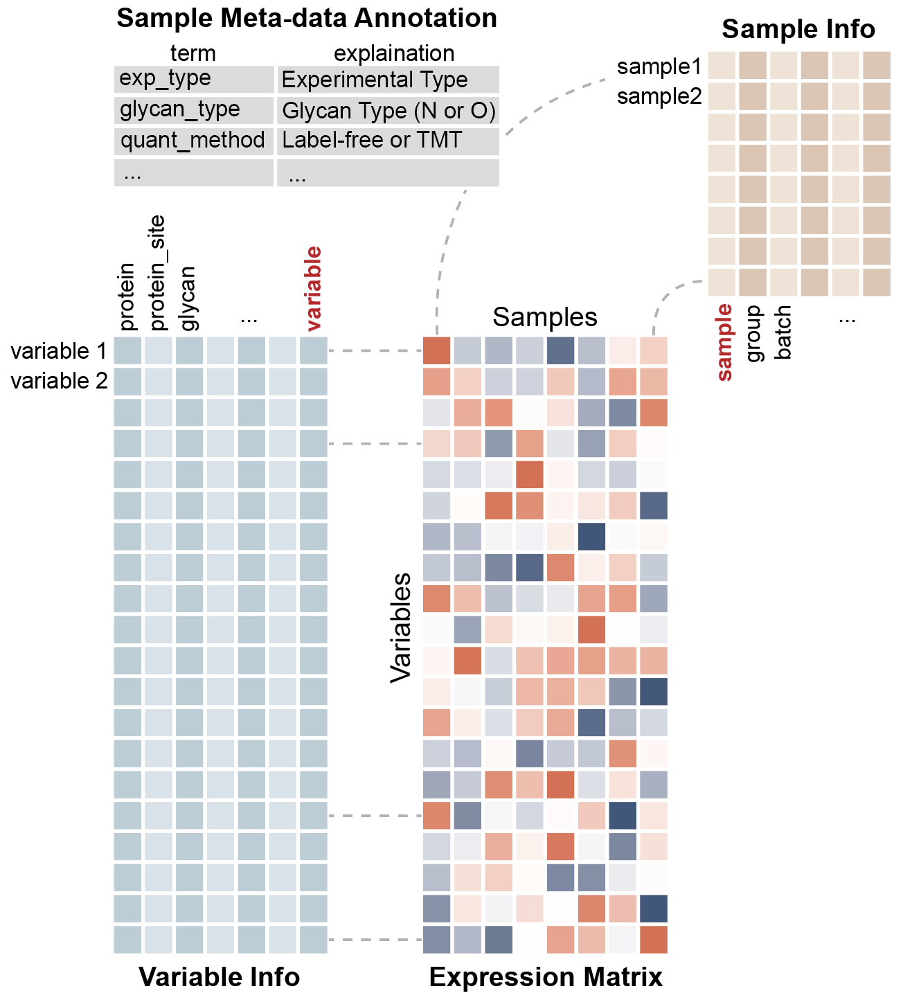

In this context, you typically work with three types of data in glycomics and glycoproteomics experiments:
- Expression data - the actual measurements of your biological molecules (glycans, glycopeptides, etc.)
- Molecular annotations - the identifiers for your molecules (structures, sequences, etc.)
- Experimental metadata - the context of your samples (time points, treatments, experimental conditions)
The experiment() class serves as a structured container
that keeps all three data types organized and interconnected.
Why should you care? Every package in the
glycoverse ecosystem speaks experiment()
fluently. It’s like having a universal translator for your glycomics
workflow - everything just clicks together.
library(glyexp)
library(dplyr)
#>
#> Attaching package: 'dplyr'
#> The following objects are masked from 'package:stats':
#>
#> filter, lag
#> The following objects are masked from 'package:base':
#>
#> intersect, setdiff, setequal, union
library(conflicted)
# Resolve function conflicts - prefer glyexp version over deprecated dplyr version
# `dplyr::select_var` is deprecated anyway, so we can safely override it
conflicts_prefer(glyexp::select_var)
#> [conflicted] Will prefer glyexp::select_var over
#> any other package.Getting Started with glyexp
Let’s begin with a simple example to illustrate the basic concepts.
toy_exp <- toy_experiment
toy_exp
#>
#> ── Others Experiment ───────────────────────────────────────────────────────────
#> ℹ Expression matrix: 6 samples, 4 variables
#> ℹ Sample information fields: group <chr>, batch <dbl>
#> ℹ Variable information fields: protein <chr>, peptide <chr>, glycan_composition <chr>The summary provides an overview of your entire experiment - variables, observations, and all the metadata.
The three core components can be extracted as follows:
The Expression Matrix
The expression matrix contains your numerical data - rows are variables (molecules), columns are observations (samples).
get_expr_mat(toy_exp)
#> S1 S2 S3 S4 S5 S6
#> V1 1 5 9 13 17 21
#> V2 2 6 10 14 18 22
#> V3 3 7 11 15 19 23
#> V4 4 8 12 16 20 24This matrix is where the magic happens - rows are your variables (molecules), columns are your observations (samples), and the numbers tell your biological story.
Variable Information
The variable information table contains detailed annotations for each molecule.
get_var_info(toy_exp)
#> # A tibble: 4 × 4
#> variable protein peptide glycan_composition
#> <chr> <chr> <chr> <chr>
#> 1 V1 PRO1 PEP1 H5N2
#> 2 V2 PRO2 PEP2 H5N2
#> 3 V3 PRO3 PEP3 H3N2
#> 4 V4 PRO3 PEP4 H3N2Think of this as your molecular address book - every variable gets its own detailed profile.
Sample Information
The sample information table records the experimental conditions for each sample.
get_sample_info(toy_exp)
#> # A tibble: 6 × 3
#> sample group batch
#> <chr> <chr> <dbl>
#> 1 S1 A 1
#> 2 S2 A 2
#> 3 S3 A 1
#> 4 S4 B 2
#> 5 S5 B 1
#> 6 S6 B 2And this? This is your experimental diary - tracking every condition, timepoint, and treatment.
Notice that the “variable” column in get_var_info() and
the “sample” column in get_sample_info() match the row and
column names in your expression matrix. These are the index
columns that maintain synchronization between data
components.
Data Manipulation with glyexp
glyexp provides dplyr-style functions for manipulating experiment objects.
For every dplyr function, glyexp provides two specialized versions:
-
_obs()functions: work on your sample metadata -
_var()functions: work on your variable annotations
Here’s an example of filtering for group “A” samples:
subset_exp <- filter_obs(toy_exp, group == "A")Let’s check what happened to our sample info:
get_sample_info(subset_exp)
#> # A tibble: 3 × 3
#> sample group batch
#> <chr> <chr> <dbl>
#> 1 S1 A 1
#> 2 S2 A 2
#> 3 S3 A 1Check the expression matrix:
get_expr_mat(subset_exp)
#> S1 S2 S3
#> V1 1 5 9
#> V2 2 6 10
#> V3 3 7 11
#> V4 4 8 12The expression matrix is automatically filtered to match!
This is filter_obs(): it filters the sample information
and automatically updates the expression matrix to match.
Variable filtering works the same way:
toy_exp |>
filter_obs(group == "A") |>
filter_var(glycan_composition == "H5N2") |>
get_expr_mat()
#> S1 S2 S3
#> V1 1 5 9
#> V2 2 6 10Notice how these functions support the pipe operator
(|>)? That’s the dplyr DNA in action!
The pattern is straightforward: glyexp functions expect and return
experiment() objects, and they preserve the index columns
during operations.
Complete dplyr Function Reference
The following table lists all supported dplyr-style functions. These functions maintain synchronization between the expression matrix, sample information, and variable information:
Each function automatically updates the expression matrix when you modify metadata. Filter samples, and the matrix follows. Rearrange variables, and the matrix adjusts accordingly.
For functions not directly supported (like distinct(),
pull(), count(), etc.), extract the tibble
first:
# Extract the tibble, then use any dplyr function you want
toy_exp |>
get_sample_info() |>
distinct(group)
toy_exp |>
get_var_info() |>
pull(protein) |>
unique()
toy_exp |>
get_sample_info() |>
count(group)Index Columns
As mentioned, the index columns maintain synchronization between data components. Avoid modifying these columns directly, as glyexp relies on them to keep everything connected.

The index columns are essential for data integrity - they can be renamed but not removed.
Want to select specific columns from your sample info? Easy:
toy_exp |>
select_obs(group) |>
get_sample_info()
#> # A tibble: 6 × 2
#> sample group
#> <chr> <chr>
#> 1 S1 A
#> 2 S2 A
#> 3 S3 A
#> 4 S4 B
#> 5 S5 B
#> 6 S6 BThe “sample” column remains protected:
The index column cannot be removed:
Matrix-Style Subsetting
Experiments can be subset using matrix-style indexing:
subset_exp <- toy_exp[, 1:3]This selects the first 3 samples and updates all components accordingly:
get_expr_mat(subset_exp)
#> S1 S2 S3
#> V1 1 5 9
#> V2 2 6 10
#> V3 3 7 11
#> V4 4 8 12
get_sample_info(subset_exp)
#> # A tibble: 3 × 3
#> sample group batch
#> <chr> <chr> <dbl>
#> 1 S1 A 1
#> 2 S2 A 2
#> 3 S3 A 1Both the expression matrix and sample info are synchronized.
Merging and Splitting
Experiments can be merged or split:
merge(exp1, exp2)The merge() function combines two experiments. If you
need to preserve batch information, use mutate_obs() to add
an ID column before merging.
What if you have more than one experiment to merge? Put them in a
list and use purrr::reduce() to merge them:
The split() function divides an experiment into a list
of experiments based on a column:
split(toy_exp, group, where = "sample_info")
#> $A
#>
#> ── Others Experiment ───────────────────────────────────────────────────────────
#> ℹ Expression matrix: 3 samples, 4 variables
#> ℹ Sample information fields: group <chr>, batch <dbl>
#> ℹ Variable information fields: protein <chr>, peptide <chr>, glycan_composition <chr>
#>
#> $B
#>
#> ── Others Experiment ───────────────────────────────────────────────────────────
#> ℹ Expression matrix: 3 samples, 4 variables
#> ℹ Sample information fields: group <chr>, batch <dbl>
#> ℹ Variable information fields: protein <chr>, peptide <chr>, glycan_composition <chr>Now the “A” experiment only contains samples from group “A”, and “B” experiment from group “B”.
Converting to Tibbles
For operations beyond what glyexp provides, you can extract the individual components:
Alternatively, use as_tibble() to convert your
experiment to a tibble in tidy format:
as_tibble(toy_exp)
#> # A tibble: 24 × 8
#> sample group batch variable protein peptide glycan_composition value
#> <chr> <chr> <dbl> <chr> <chr> <chr> <chr> <int>
#> 1 S1 A 1 V1 PRO1 PEP1 H5N2 1
#> 2 S2 A 2 V1 PRO1 PEP1 H5N2 5
#> 3 S3 A 1 V1 PRO1 PEP1 H5N2 9
#> 4 S4 B 2 V1 PRO1 PEP1 H5N2 13
#> 5 S5 B 1 V1 PRO1 PEP1 H5N2 17
#> 6 S6 B 2 V1 PRO1 PEP1 H5N2 21
#> 7 S1 A 1 V2 PRO2 PEP2 H5N2 2
#> 8 S2 A 2 V2 PRO2 PEP2 H5N2 6
#> 9 S3 A 1 V2 PRO2 PEP2 H5N2 10
#> 10 S4 B 2 V2 PRO2 PEP2 H5N2 14
#> # ℹ 14 more rowsThese tibbles can be large, so filtering first is recommended:
toy_exp |>
filter_var(glycan_composition == "H5N2") |>
select_obs(group) |>
select_var(-glycan_composition) |>
as_tibble()
#> # A tibble: 12 × 6
#> sample group variable protein peptide value
#> <chr> <chr> <chr> <chr> <chr> <int>
#> 1 S1 A V1 PRO1 PEP1 1
#> 2 S2 A V1 PRO1 PEP1 5
#> 3 S3 A V1 PRO1 PEP1 9
#> 4 S4 B V1 PRO1 PEP1 13
#> 5 S5 B V1 PRO1 PEP1 17
#> 6 S6 B V1 PRO1 PEP1 21
#> 7 S1 A V2 PRO2 PEP2 2
#> 8 S2 A V2 PRO2 PEP2 6
#> 9 S3 A V2 PRO2 PEP2 10
#> 10 S4 B V2 PRO2 PEP2 14
#> 11 S5 B V2 PRO2 PEP2 18
#> 12 S6 B V2 PRO2 PEP2 22Much more manageable, right?
Background and Design Principles
The experiment() class was designed with insights from
related data containers:
SummarizedExperiment The foundational omics data container from Bioconductor. Well-established for RNA-seq analysis.
tidySummarizedExperiment An attempt to bring tidy principles to SummarizedExperiment from the tidySummarizedExperiment package. While the concept is sound, storing all components in a single tibble doesn’t align with the mental model of separated data types.
massdataset A related package for mass spectrometry data. It provides tidy operations, clean data separation, and data processing history tracking. We appreciate its approach to reproducibility.
While object-oriented programming has its merits, glyexp takes a functional programming approach. Your analysis code serves as the reproducibility record - clear, transparent, and familiar to R users.
Design Philosophy glyexp uses functional programming because it aligns with how R users work. The design emphasizes clear, chainable functions.
Thank you to all the developers who contributed to these foundational packages.
What’s Next?
Now you have the basic understanding of experiment().
Next, you can learn how to use experiment() in your
analysis.